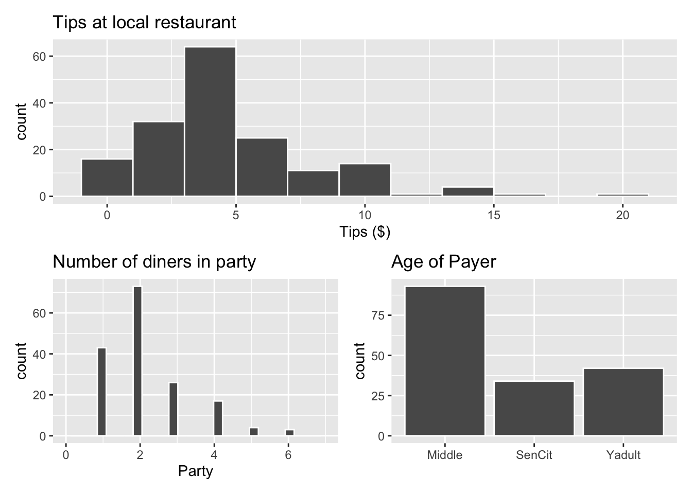
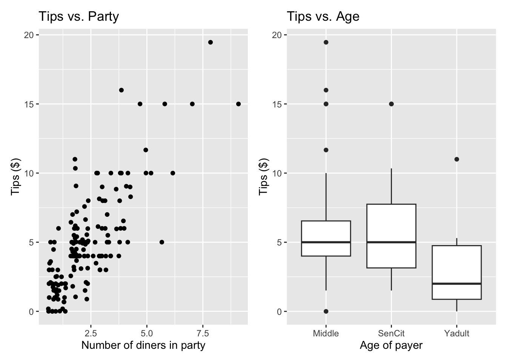

library(tidyverse)
library(tidymodels)
library(knitr)
library(patchwork)
# add other packages as neededLab 04: Exam 01 Review
Important
This lab will be based on attendance and participation in lab on February 14.
Push your work to GitHub. You do not need to submit anything on Gradescope.
Getting Started
Go to the sta221-sp25 organization on GitHub. Click on the repo with the prefix lab-04. It contains the starter documents you need to complete the lab.
Clone the repo and start a new project in RStudio. See the Lab 00 instructions for details on cloning a repo and starting a new project in R.
Packages
You will need the following packages for the lab:
Restaurant tips
What factors are associated with the amount customers tip at a restaurant? To answer this question, we will use data collected in 2011 by a student at St. Olaf who worked at a local restaurant.1
The variables we’ll focus on for this analysis are
Tip: amount of the tipParty: number of people in the partyAge: Age of the payer
View the data set to see the remaining variables.
tips <- read_csv("data/tip-data.csv")Exploratory data analysis
p1 <- ggplot(data = tips, aes(x = Tip)) +
geom_histogram(color = "white", binwidth = 2) +
labs(x = "Tips ($)",
title = "Tips at local restaurant")
p2 <- ggplot(data = tips, aes(x = Party)) +
geom_histogram(color = "white") +
labs(x = "Party",
title = "Number of diners in party") +
xlim(c(0, 7))
p3 <- ggplot(data = tips, aes(x = Age)) +
geom_bar(color = "white") +
labs(x = "",
title = "Age of Payer")
p1 / (p2 + p3)
p4 <- ggplot(data = tips, aes(x = Party, y = Tip)) +
geom_jitter() +
labs(x = "Number of diners in party",
y = "Tips ($)",
title = "Tips vs. Party")
p5 <- ggplot(data = tips, aes(x = Age, y = Tip)) +
geom_boxplot() +
labs(x = "Age of payer",
y = "Tips ($)",
title = "Tips vs. Age")
p4 + p5
We will use the number of diners in the party and age of the payer to understand variability in the tips.
Exercise 1
We will start with the main effects model that includes Age and Party.
How many indicator variables for
Agecan we create from the data?How many indicator variables for
Agewill be in the regression model?Are the responses to parts a and b equal? If not, explain why not.
Which of the following is true for this model? Select all that apply.
- The intercepts are the same for every level of
Age. - The intercepts differ by
Age. - The effect of
Partyis the same for every level ofAge. - The effect of
Partydiffers byAge.
- The intercepts are the same for every level of
Exercise 2
Consider the main effects model that includes Age and Party.
What is the dimension of the design matrix \(\mathbf{X}\) for the main effects model?
Calculate the coefficient estimates \(\hat{\boldsymbol{\beta}}\) directly from the data.
Write the equation of the estimated regression model.
# add code here Exercise 3
Consider the main effects model that includes Age and Party. Get \(\mathbf{y}\) and \(\mathbf{X}\) from the data.
Use \(\mathbf{y}\) and \(\mathbf{X}\) to compute \(\hat{\sigma}_{\epsilon}\) .
Interpret \(\hat{\sigma}_\epsilon\) in the context of the data.
Compute \(Var(\hat{\boldsymbol{\beta}})\).
You wish to test whether there is a linear relationship between tips and the number of diners in the party, after adjusting for the age of the payer. Compute the test statistic.
# add code hereExercise 4
Consider the main effects model that includes Age and Party. Get \(\mathbf{y}\) and \(\mathbf{X}\) from the data.
Use \(\mathbf{y}\) and \(\mathbf{X}\) to compute \(R^2\). Interpret this value in the context of the data.
Use \(\mathbf{y}\) and \(\mathbf{X}\) to compute \(RMSE\). Interpret this value in the context of the data.
# add code hereExercise 5
You decide to add an interaction effect between Age and Party to the model and fit a model of the following form:
\[ Tip_i = \beta_0 + \beta_1Party_i + \beta_2SenCit_i + \beta_3Yadult_i + \beta_4Party_i \times SenCit_i + \beta_5 Party_i \times Yadult_i + \epsilon_i \]
Which of the following is true for this model? Select all that apply.
The intercepts are the same for every level of
Age.The intercepts differ by
Age.The effect of
Partyis the same for every level ofAge.The effect of
Partydiffers byAge.
By how much does the intercept for tables with young adult payers differ from tables with middle age payers? Write the answer in terms of the \(\beta\)’s.
Write the equation of the model for tables in which the payer is a senior citizen.
Suppose you wish to test the hypotheses: \(H_0: \beta_5 = 0 \text{ vs. }H_a: \beta_5 \neq 0\) . State what is being tested in terms of the effect of
Party.
Exercise 6
Use the lm() function to fit the model that includes Age and Party and the interaction between the two variables. Display the 90% confidence interval for the coefficients.
The standard error for
AgeSenCitis 0.784. State what this value means in the context of the data.Write code to show how the 90% confidence interval for
AgeSenCitwas computed.Based on the confidence interval, is there evidence that tables with senior citizen payers tip differently on average than tables with middle age payers?
Exercise 7
The following are general questions about regression. They are not specific to the tips data set.
What does it mean for an estimator to be the “least-squares” estimator?
Consider the derivation of the least-squares estimator:
\[ \begin{aligned} \nabla_{\beta}\boldsymbol{\epsilon}^\mathsf{T}\boldsymbol{\epsilon} &= \nabla_{\boldsymbol{\beta}}[(\mathbf{y} - \mathbf{X}\boldsymbol{\beta})^\mathsf{T}(\mathbf{y} - \mathbf{X}\boldsymbol{\beta})] \\[5pt] &=\nabla_{\boldsymbol{\beta}}[\mathbf{y}^\mathsf{T}\mathbf{y} - \mathbf{y}^\mathsf{T}\mathbf{X}\boldsymbol{\beta} - \boldsymbol{\beta}^\mathsf{T}\mathbf{X}^\mathsf{T}\mathbf{y} + \boldsymbol{\beta}^\mathsf{T}\mathbf{X}^\mathsf{T}\mathbf{X}\boldsymbol{\beta}] \\[5pt] &=\nabla_{\boldsymbol{\beta}}[\mathbf{y}^\mathsf{T}\mathbf{y} - 2\boldsymbol{\beta}^\mathsf{T}\mathbf{X}^\mathsf{T}\mathbf{y} + \boldsymbol{\beta}^\mathsf{T}\mathbf{X}^\mathsf{T}\mathbf{X}\boldsymbol{\beta}]\\[5pt] & = -2\mathbf{X}^\mathsf{T}\mathbf{y} + 2\mathbf{X}^\mathsf{T}\mathbf{X}\boldsymbol{\beta} \\[5pt] &\Rightarrow \hat{\boldsymbol{\beta}} = (\mathbf{X}^\mathsf{T}\mathbf{X})^{-1}\mathbf{X}^\mathsf{T}\mathbf{y} \end{aligned} \]
Explain how \(-\mathbf{y}^\mathsf{T}\mathbf{X}\boldsymbol{\beta} - \boldsymbol{\beta}^\mathsf{T}\mathbf{X}^\mathsf{T}\mathbf{y}\) is simplified to \(-2\boldsymbol{\beta}^\mathsf{T}\mathbf{X}^\mathsf{T}\mathbf{y}\) when going from lines 2 to 3.
- Explain what rules were used to compute the gradient in line 4.
Exercise 8
Below we show how SSR = \(\mathbf{y}^\mathsf{T}\mathbf{y} - \hat{\boldsymbol{\beta}}^\mathsf{T}\mathbf{X}^\mathsf{T}\mathbf{y}\)
\[ \begin{aligned} SSR = \mathbf{e}^\mathsf{T}\mathbf{e} &= (\mathbf{y} - \mathbf{X}\hat{\boldsymbol{\beta}})^\mathsf{T}(\mathbf{y} - \mathbf{X}\hat{\mathbf{\beta}}) \\[5pt] & = \mathbf{y}^\mathsf{T}\mathbf{y} - \mathbf{y}^\mathsf{T}\mathbf{X}\hat{\boldsymbol{\beta}} - \hat{\boldsymbol{\beta}}^\mathsf{T}\mathbf{X}^\mathsf{T}\mathbf{y} + \hat{\boldsymbol{\beta}}^\mathsf{T}\mathbf{X}^\mathsf{T}\mathbf{X}\hat{\boldsymbol{\beta}} \\[5pt] &= \mathbf{y}^\mathsf{T}\mathbf{y} - 2\hat{\boldsymbol{\beta}}^\mathsf{T}\mathbf{X}^\mathsf{T}\mathbf{y}+\hat{\boldsymbol{\beta}}^\mathsf{T}\mathbf{X}^\mathsf{T}\mathbf{X}\hat{\boldsymbol{\beta}}\\[5pt] & = \mathbf{y}^\mathsf{T}\mathbf{y} - \hat{\boldsymbol{\beta}}^\mathsf{T}\mathbf{X}^\mathsf{T}\mathbf{y} \end{aligned} \]
a. Explain how \(-\mathbf{y}^\mathsf{T}\mathbf{X}\boldsymbol{\beta} - \boldsymbol{\beta}^\mathsf{T}\mathbf{X}^\mathsf{T}\mathbf{y}\) is simplified to \(-2\boldsymbol{\beta}^\mathsf{T}\mathbf{X}^\mathsf{T}\mathbf{y}\) when going from lines 2 to
b. Explain how we know \(\hat{\boldsymbol{\beta}}^\mathsf{T}\mathbf{X}^\mathsf{T}\mathbf{y} = \hat{\boldsymbol{\beta}}^\mathsf{T}\mathbf{X}^\mathsf{T}\mathbf{X}\hat{\boldsymbol{\beta}}\) when going from lines 3 to 4.
Submission
To submit the AE:
Render the document to produce the PDF with all of your work from today’s class.
Push all your work on GitHub. You’re done! 🎉
There is no Gradescope submission for this lab.
Footnotes
Dahlquist, Samantha, and Jin Dong. 2011. “The Effects of Credit Cards on Tipping.” Project for Statistics 212-Statistics for the Sciences, St. Olaf College.↩︎